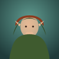
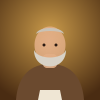
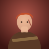
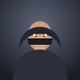
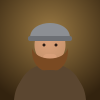
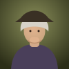

Старый Мартин
900из 2000
Как будут выглядеть окна «Таверны»
Все окна — настоящие стили модуля, не картинки. Переключатель сверху меняет тему у всех окон разом. Кости можно щёлкать, бросать и ставить — это черновое поведение, чтобы почувствовать анимации.
Портреты — заглушки: в модуле здесь будут ваши токены с карты. Шрифты — Alegreya (свободная лицензия, с кириллицей), в модуль они едут внутри.
Панель ведущего
Открывается кнопкой на панели токенов слева. Список игр — слева, справа — описание выбранной и кнопка «Собрать стол».
- Сейчас на столе — все идущие партии: кто сидит, чей ход, банк. Отсюда прячут, возвращают окно и убирают стол.
- Вкладка «Загадки» появится на следующем этапе.
Таверна
Кости
Шесть костей: бросаешь, откладываешь то, что даёт очки, и решаешь — рискнуть оставшимися или записать набранное. Не выпало ничего — всё за ход сгорает. Первый, кто наберёт цель, забирает банк.
2–6 мест
боты с нравом
ставки с листов
шулерство (dnd5e)
Сейчас на столе



Кости · «Сломанное колесо»ходит Мира · банк 15 зм · до 2000

Кнаклбоунс · Пристань скрыт от игроковПосадка: токены с карты
Главная переделка. Пула соперников больше нет — за стол садятся токены текущей сцены.
- «Взять выделенные» — выделили токены на карте, нажали, они за столом.
- Токен игрока садит самого игрока, под именем персонажа.
- У NPC переключатель Бот / Ведущий; у бота — нрав.
- Ещё способы: кнопка «За стол» в меню токена и перетаскивание актёра из сайдбара.
- Номер слева — порядок ходов, места можно двигать за ручку.
Собрать стол · Кости
Игроки в сети: 2
- Мираигрок Юра · за столом
- Ильваигрок Катя
Токены сцены Трактир
- Старый МартинNPC · трактирщик · за столом
- БреннаNPC · наёмница · за столом
- Хейл «Два медяка»NPC · выделен на карте
- Брам СчетоводNPC · выделен на карте

Староста ТобиасNPC
Перетащите актёра из сайдбара
За столом 3 места
NPC ставят
Оформление стола
Кости
Общий каркас всех игр: соперники сверху, стол посередине, ваше место и действия внизу, журнал свёрнут в одну строку, полоса ведущего отдельно.
- Кости брошены «как попало», а не выстроены в ряд.
- Выбранная кость приподнята и помечена галочкой — это видно и без цвета.
- Отложенное за ход лежит в деревянном лотке справа.
- Чей ход — кольцо вокруг портрета плюс флажок «ходит».
Кости · Трактир «Сломанное колесо»
Кости
играем до 2000 · порог входа 35015 змбанк · по 5 с места
Бренна
1250из 2000
Отложено за ход
за ход500
Мира откладывает три пятёрки — 500журнал · 14
- Мира откладывает — 500
- Бренна записывает 450 — всего 1250
- Старый Мартин: пусто, 300 сгорает
- Бренна откладывает — 200
Ведущий
Чат · итог партии
Мира выигрывает «Кости»«Сломанное колесо» · 3 места
Банк15 зм → Мира
Мира2050
Бренна1650
Старый Мартин900
Кости лжеца
У каждого стаканчик с костями, которые видит только он. Ставка «столько-то граней X на всём столе» — либо выше, либо «Не верю!».
- Соперники — стаканчики на сукне; под именем точками видно, сколько костей осталось.
- Последняя ставка висит пузырём над тем, кто её сделал.
- Ваш стаканчик приподнят, кости видны только вам.
- При вскрытии подсвечиваются совпавшие кости.
Кости лжеца · Пристань
Кости лжеца
раунд 3 · на столе 17 костей · единицы — любые40 змбанк
3 ×
4
Хейл
4 ×
5
Бренна
3
Брам
Ставка Бренны
4 ×
видите только вы
Ведущий
Кнаклбоунс
Дуэль. Выпавшую кость кладёте в одну из своих колонок. Одинаковые в колонке множатся, а у соперника в той же колонке такие же кости сбиваются.
- Наведите на колонку: появится призрак кости, а кости соперника под угрозой задрожат.
- Множители подписаны ×2 и ×3 — не только цветом.
- Соперник-бот отвечает сам.
Кнаклбоунс · Пристань
Кнаклбоунс
дуэль · кто больше, когда чьё-то поле заполнится10 змбанк
ваш ход
Хейл
0
ваш кубик
0
Мира
Хейл кладёт во вторую колонкужурнал · 7
- Хейл кладёт 5 во вторую колонку
Покер на костях
Пять костей, один переброс выбранных, покерные комбинации. Как в «Ведьмаке»: ставка до переброса и после.
- Руки соперников открыты, у каждой подписана комбинация.
- Кости для переброса помечены стрелкой ↻.
- Шкала комбинаций под рукой показывает, где вы сейчас.
Покер на костях · «Сломанное колесо»
Покер на костях
рука 2 из 3 · Мира 1 : 0 Бренна30 змбанк руки
Бренна
Две пары
Тобиас
Пара · пас
Тройкаваша рука
Ставки уравнены: по 15 зм. Выберите кости для переброса — или оставьте руку как есть.
Ведущий
Двадцать одно
Шесть кубиков от к4 до к20, каждый берётся раз за раунд. Перевалил за 21 — раунд проигран.
- Кубики — многогранники своей формы, а не текстовые кнопки.
- Взятый кубик гаснет в запасе и ложится в руку со значением.
- Полоска до 21; перебор — красная полоса и штамп.
- Взятые раунды — кружками: заполненный или пустой.
Двадцать одно · У очага
Двадцать одно
раунд 2 · до 3 побед · предел 2115 змбанк
Брам
18
Тобиас
23
Ваша рука
11 / 21
у Брама 18
Корабль, капитан и команда
Пять костей, три броска. Сначала нужна шестёрка (корабль), потом пятёрка (капитан), потом четвёрка (команда). Оставшиеся две кости — груз, его очки и решают.
- Пустые гнёзда показывают, что нужно; найденная кость встаёт в гнездо сама.
- Броски — тремя кружками на сукне.
- Как только команда в сборе, груз можно перебросить или оставить.
Корабль, капитан и команда · Пристань
Корабль, капитан и команда
у каждого три броска · лучший груз забирает банк9 змбанк
Брам
9груз
Старый Мартин
—
ищем четвёрку — команду
Корабль · 6
Капитан · 5
Команда · 4
Груз—